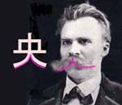

OH SHIT, that is a big stache.
To a certain kind of brawny man, having a big Moustache is central to his lifestyle. That's right - I'm talking about Philosophers.

central ★★★☆☆ 中 (middle) + 央 (central) = 中央 (central)
central. Tokyo has a famous train line: 中央線、(the central line).
 KANJIDAMAGE
KANJIDAMAGE